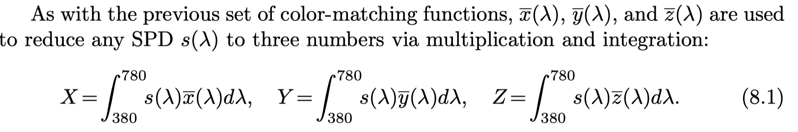
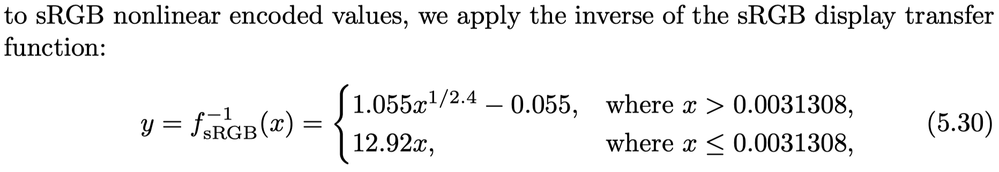
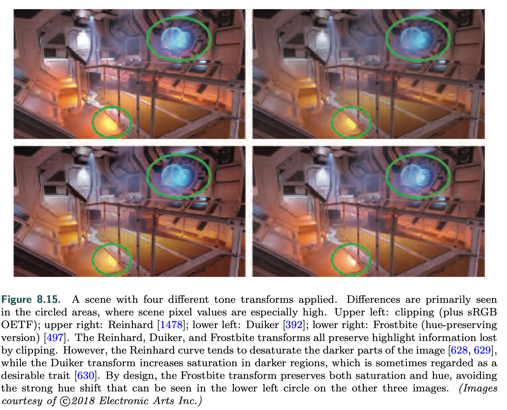

Real-Time Light and Color
Light Quantities
Radiometry(辐射度量学)
Radiometry deals with the measurement of electromagnetic radiation.

- Radiant flux is the flow of radiant energy over time—power—measured in watts (W).
- Radiance, L(lambda, x, d), is a measure of electromagnetic radiation in a single ray
- An important property of radiance is that it is not affected by distance, ignoring atmospheric effects such as fog.
- SPD
{kind=link}
Photometry
Photometry, is like radiometry, except that it weights everything by the sensitivity of the human eye. The conversion curve and the units of measurement are the only difference between the theory of photometry and the theory of radiometry.
{kind=link}
{kind=link}
Colorimetry(色度学)
Colorimetry deals with the relationship between spectral power distributions(SPD) and the perception of color.
- human biology For color perception, the eye works by having three different types of cone receptors in the retina, with each type of receptor responding differently to various wavelengths.
- color matching function For an arbitrary spectral distribution, the color-matching functions can be multiplied by the distribution and the area under each resulting curve (i.e., the integral) gives the relative amounts to set the colored lights to match the perceived color produced by the spectrum ---different spectral distributions can resolve to the same three weights --- metamer(条件等色) 任意服从一个SPD的光，都可以用积分计算出以三个颜色为基本组成的color-matching functions的权重组合。
- mathematical abstraction color matching function
- transformation between a SPD  These X, Y , and Z tristimulus values are weights that define a color in CIE XYZ space.
- other color spaces linear sRGB color space
- sRGB to XYZ Y means luminance
{kind=link}
{kind=link}
{kind=link}
{kind=link}
{kind=link}
{kind=link}
{kind=link}
{kind=link}
Rendering with RGB colors
Strictly speaking, RGB values represent perceptual rather than physical quantities. Using them for physically based rendering is technically a category error.
- physically correct
- in predictive rendering, these subtle errors can be important
- for the majority of rendering systems, RGB rendering works surprisingly well
{kind=link}
Display Encoding
linear vs. nonlinear
- linear When we calculate the effect of lighting, texturing, or other operations, the values used are assumed to be linear. Informally, this means that addition and multiplication work as expected.
- nonlinear To avoid a variety of visual artifacts, display buffers and textures use nonlinear encodings that we must take into account.
EOTF vs. OETF
- electrical optical transfer function (EOTF) / display transfer function describes the relationship between the digital values in the display buffer and the radiance levels emitted from the display
- optical electric transfer function (OETF) the opposite of EOTF
gamma correction
因为display equipment的buffer值和真正展示的radiance是非线性的关系，但是我们又希望whatever value we compute will emit a corresponding radiance level(即我们计算得到的值和emit的值是线性的)，那么我们就要cancel out the display transfer function ---- 这个过程叫gamma 校正
{kind=link}
transformation
- linear to sRGB 
- sRGB to linear
{kind=link}
{kind=link}
problem with neglecting gamma correction
- lower linear values will appear too dim on the screen
- shading computations that are correct for physically linear radiance values are performed on nonlinear values
- affects the quality of antialiased edges
{kind=link}
{kind=link}
Scene to Screen
High Dynamic Range Display Encoding
HDR displays use the Rec. 2020 and Rec. 2100 standards.
- color gamut
- nonlinear display encodings Rec. 2100 defines two nonlinear display encodings: perceptual quantizer (PQ) [1213] and hybrid log-gamma (HLG). The HLG encoding is not used much in rendering situations, so we will focus here on PQ, which defines a peak luminance value of 10, 000 cd/m^2
- transfer to an HDR display
- RGB value: the rendering color space --> Rec.2020 color space
- apply the PQ encoding
{kind=link}
Tone Mapping
Tone mapping or tone reproduction is the process of converting scene radiance values to display radiance values. The process of scaling by exposure and then applying a tone reproduction transform is a type of global tone mapping.
{kind=link}
{kind=link}
{kind=link}
Tone Reproduction Transform
Tone reproduction transforms are often expressed as one-dimensional curves mapping scene-referred input values to display-referred output values.
- applied independently to R, G, and B values may cause shifts in saturation and hue
- applied to luminance the resulting display-referred color may be out of the display’s RGB gamut, in which case it will need to be mapped back in 
{kind=link}
Exposure
Relies on analyzing the scene-referred luminance values. To avoid introducing stalls, this analysis is typically done by sampling the previous frame.
- the log-average scene luminance
- a histogram of luminance values
Color Grading
Color grading is typically performed by interactively manipulating the colors in an example scene image, until the desired creative “look” is achieved.
{kind=link}
{kind=link}